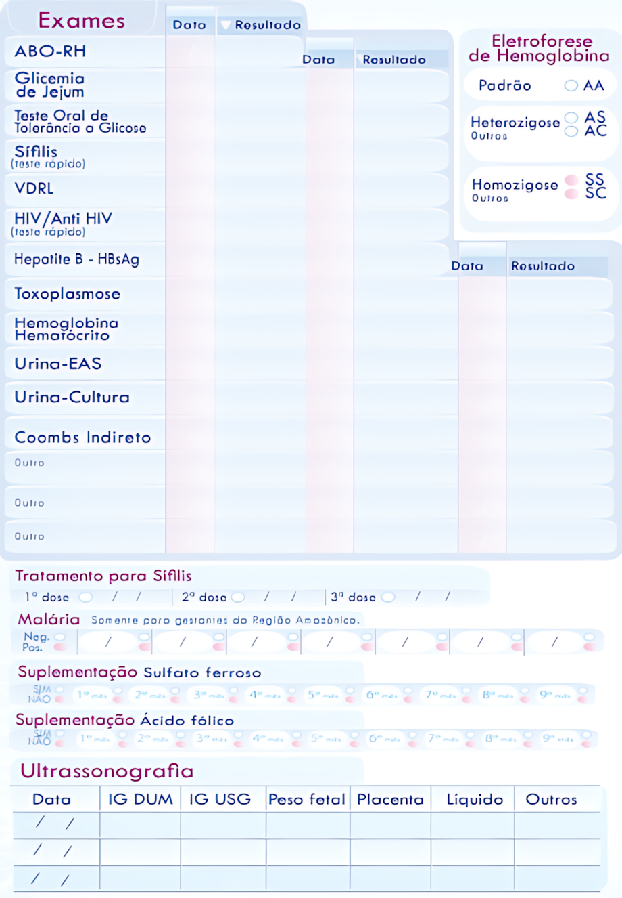
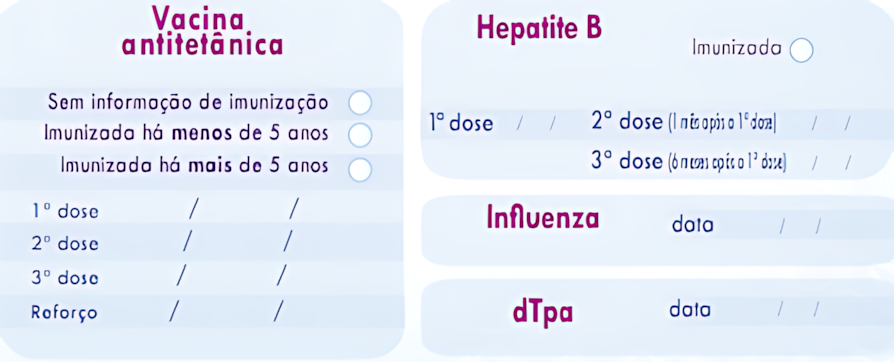

Cartilha interativa para o cuidado a Gestação, Pós-parto e Aleitamento Materno
2. CADERNETA DA GESTANTE
Sumário ▼
UNIDADE 1 - INICIANDO A VISITA DOMICILIAR
- 1.1 Cumprimentar educadamente
- 1.2 Observar o ambiente
- 1.3 “Você já iniciou o pré-natal?”
UNIDADE 2 - CADERNETA DA GESTANTE
- 2.1 Solicitar a Caderneta da Gestante e observar se a gestante tem realizado os exames de rotina
- 2.2 Observar na caderneta se está com esquema vacinal completo, caso contrário, orientar ir à Unidade de Saúde para atualizar
- 2.3 Observar na Caderneta da Gestante se tem consulta pré-natal agendada e se ela está indo para o pré-natal regularmente.
Unidade 3 - SINAIS E SINTOMAS DE ALERTA
- 3.1 “Você está sentindo alguma coisa atualmente?”
- 3.2 “Você está tendo algum dos seguintes sintomas no momento?”
Unidade 4 - PERGUNTAS E ORIENTAÇÕES GERAIS
- 4.1 “Como tem sido sua alimentação?”
- 4.2 “Tem realizado exercícios físicos?”
- 4.3 “Realizou alguma consulta com o dentista durante esta gravidez?”
- 4.4 “Está fazendo uso de sulfato ferroso?”
- 4.5 “Está fazendo uso de ácido fólico?” (Fazer a pergunta apenas se a mulher tiver no máximo com 12 semanas de gestação)
Unidade 5 - ORIENTAÇÕES SOBRE SINTOMAS DA GRAVIDEZ
- 5.1 Lista de orientações
Unidade 6 - SINAIS E SINTOMAS DE TRABALHO DE PARTO
- 6.1 “Perda de tampão mucoso”
- 6.2 Rompimento da bolsa amniótica (“rompimento da bolsa das águas”)
- 6.3 Contrações uterinas
Unidade 7 - PÓS-PARTO
- 7.1 “Como foi seu parto?”
- 7.2 “Teve algum problema no parto ou até a alta da maternidade?”
- 7.3 ”Depois que você chegou em casa, houve algum problema com você ou com o bebê?”
- 7.4 Pedir para ver toda a documentação emitida pelo hospital no momento da alta
- 7.5 “Já realizou a consulta de pós-parto com a enfermeira ou o médico da Unidade de Saúde?”
Unidade 8 - SINAIS E SINTOMAS DE RISCO NO PÓS-PARTO
- 8.1 “Você está sentindo alguma coisa atualmente?”
- 8.2 “Você está tendo algum dos seguintes sintomas no momento?”
- 8.3 “Você tem apresentado perda de apetite, vontade de ficar sozinha com frequência, descontentamento, tristeza, insônia ou raiva?”
- 8.4 “Como está o seu sangramento pós-parto?”
Unidade 9 - ALIMENTAÇÃO, MEDICAÇÃO E VACINAÇÃO NO PÓS-PARTO
- 9.1 “Como tem sido sua alimentação?”
- 9.2 “Está fazendo uso do sulfato ferroso?”
- 9.3 Solicitar a Caderneta da Gestante e de Vacina para verificar o estado vacinal.
Unidade 10 - PLANEJAMENTO REPRODUTIVO
- 10.1 “Você já voltou a menstruar após o parto?”
- 10.2 “Você já começou a utilizar métodos para evitar a gravidez nesse momento?”
Unidade 11 - AMAMENTAÇÃO
- 11.1 “Como está sua experiência com a amamentação até agora, está enfrentando dificuldade?”
- 11.2 “Foi feito o teste da linguinha no seu bebê na maternidade?”
- 11.3 “Você está amamentando exclusivamente (apenas o leite materno)?”
- 11.4 “Você tem conseguido encontrar uma posição confortável para amamentar?”
Unidade 12 - PROBLEMAS NA AMAMENTAÇÃO
- 12.1 “Você acha que tem pouco leite?”
- 12.2 “Você acha que seu bebê está mamando pouco?”
- 12.3 “Como saber se o bebê está recebendo leite suficiente?”
- 12.4 “Você acha que seu leite é fraco?”
Unidade 13 - SINAIS E SINTOMAS DE TRABALHO DE PARTO
- 13.1 “Você está sentindo dor ao amamentar?”
- 13.2 “Seu mamilo tem fissuras (rachaduras)?”
- 13.3 “Sente suas mamas pesadas, sensíveis, muito cheias e com dor?”
2.1 Solicitar a Caderneta da Gestante e observar as seguintes informações:
Verificar se a gestante tem realizado os exames de rotina conforme os trimestres de gestação.
Caso NÃO tenha feito algum exame, pergunte qual seria a razão.
Caso NÃO tenha feito algum exame, pergunte qual seria a razão.
Tabela 1 - Tempo aproximado de gravidez conforme trimestre de gestação.
| Trimestre | Semana |
|---|---|
| 1º trimestre | Até 13 semanas e meia |
| 2º trimestre | 14 semanas até 27 semanas e meia |
| 3º trimestre | 28 semanas até o parto |
Imagem 1 - Página de exames da Caderneta da Gestante.
| Exame | Período de realização | Indicação |
|---|---|---|
| Hemoglobina e hematócrito | 1ª consulta e 3º trimestre | Verificar Anemia.2,3 |
| Eletroforese de hemoglobina | 1ª consulta | Verificar traço ou Doença Falciforme.2,3 |
| ABO – Rh | 1ª consulta | Verificar Tipagem Sanguínea. Se mãe Rh- e pai Rh+ ou desconhecido, fazer Coombs indireto.2,3 |
| Coombs indireto (Faz quando mãe Rh- e pai Rh+ ou desconhecido) | A partir da 24ª semana | Coombs indireto positivo: referenciar para pré-natal de alto risco. Coombs indireto negativo: Repetir exame mensalmente até o parto.2,3 |
| Glicemia em jejum | 1ª consulta e 3º trimestre | Verificar Diabetes Mellitus Gestacional ou Diabetes anterior à gestação. 2,3 |
| Teste Oral de Tolerância à Glicose (TOTG) 75g | 24ª - 28ª semanas | Verificar Diabetes Mellitus Gestacional ou Diabetes anterior à gestação.2,3 |
| Urina tipo I ou Sumário de Urina ou Elementos Anormais do Sedimento (EAS) | 1ª consulta e 3º trimestre | Verificar Infecção do Trato Urinário e outras alterações.2,3 |
| Urocultura | 1ª consulta e 3º trimestre | Verificar Infecção do Trato Urinário, mesmo quando o Sumário de Urina não identificar alterações.2,3 |
| Teste rápido para Sífilis | 1ª consulta e 3º trimestre | Verificar Sífilis.2,3 |
| VDRL | 1ª consulta e 3º trimestre | Verificar Sífilis e acompanhar tratamento dos casos.2,3 |
| Teste rápido para HIV ou sorologia (anti HIV I e II) | 1ª consulta e 3º trimestre | Verificar HIV.2,3 |
| Teste rápido para Hepatite B ou sorologia para Hepatite B (HBsAg)) | 1ª consulta e 3º trimestre | Verificar Hepatite B.2,3 |
| Teste rápido para Hepatite C | De acordo com histórico de risco para exposição ao vírus da Hepatite C | Verificar Hepatite C.3 |
| HTLV I e II | 1ª consulta e 3º trimestre | Detecção de Infecção pelo Vírus T-Linfotrópico Humano (HTLV).4 |
| Citomegalovírus (IgG e IgM) | 1ª consulta e 3º trimestre | Detecção de infecção pelo Citomegalovírus.5 |
| Toxoplasmose (IgG e IgM) | 1ª consulta e 3º trimestre | Verificar Toxoplasmose.2,3 |
| Ultrassonografia obstétrica | |
|---|---|
| Período de realização | Indicação |
| 1° e 3° trimestre | Diagnóstico de gemelaridade, datação específica da gravidez, verifica a viabilidade fetal, etc.2,3 |
| Exame | Período de realização | Indicação |
|---|---|---|
| Hemoglobina e hematócrito | 1ª consulta e 3º trimestre | Verificar Anemia.2,3 |
| Eletroforese de hemoglobina | 1ª consulta | Verificar traço ou Doença Falciforme.2,3 |
| ABO – Rh | 1ª consulta | Verificar Tipagem Sanguínea. Se mãe Rh- e pai Rh+ ou desconhecido, fazer Coombs indireto.2,3 |
| Coombs indireto (Faz quando mãe Rh- e pai Rh+ ou desconhecido) | A partir da 24ª semana | Coombs indireto positivo: referenciar para pré-natal de alto risco. Coombs indireto negativo: Repetir exame mensalmente até o parto.2,3 |
| Glicemia em jejum | 1ª consulta e 3º trimestre | Verificar Diabetes Mellitus Gestacional ou Diabetes anterior à gestação. 2,3 |
| Teste Oral de Tolerância à Glicose (TOTG) 75g | 24ª - 28ª semanas | Verificar Diabetes Mellitus Gestacional ou Diabetes anterior à gestação.2,3 |
| Urina tipo I ou Sumário de Urina ou Elementos Anormais do Sedimento (EAS) | 1ª consulta e 3º trimestre | Verificar Infecção do Trato Urinário e outras alterações.2,3 |
| Urocultura | 1ª consulta e 3º trimestre | Verificar Infecção do Trato Urinário, mesmo quando o Sumário de Urina não identificar alterações.2,3 |
| Teste rápido para Sífilis | 1ª consulta e 3º trimestre | Verificar Sífilis.2,3 |
| VDRL | 1ª consulta e 3º trimestre | Verificar Sífilis e acompanhar tratamento dos casos.2,3 |
| Teste rápido para HIV ou sorologia (anti HIV I e II) | 1ª consulta e 3º trimestre | Verificar HIV.2,3 |
| Teste rápido para Hepatite B ou sorologia para Hepatite B (HBsAg)) | 1ª consulta e 3º trimestre | Verificar Hepatite B.2,3 |
| Teste rápido para Hepatite C | De acordo com histórico de risco para exposição ao vírus da Hepatite C | Verificar Hepatite C.3 |
| HTLV I e II | 1ª consulta e 3º trimestre | Detecção de Infecção pelo Vírus T-Linfotrópico Humano (HTLV).4 |
| Citomegalovírus (IgG e IgM) | 1ª consulta e 3º trimestre | Detecção de infecção pelo Citomegalovírus.5 |
| Toxoplasmose (IgG e IgM) | 1ª consulta e 3º trimestre | Verificar Toxoplasmose.2,3 |
| Ultrassonografia obstétrica | |
|---|---|
| Período de realização | Indicação |
| 1° e 3° trimestre | Diagnóstico de gemelaridade, datação específica da gravidez, verifica a viabilidade fetal, etc.2,3 |
2.2 Observar na caderneta se está com esquema vacinal completo, caso contrário, orientar ir à Unidade de Saúde para atualizar.
Imagem 2 - Página de vacinas da Caderneta da Gestante.
| Vacinação antitetânica (dT/dTpa) | |
|---|---|
| Histórico vacinal | Condução na gestação |
| Vacinada com pelo menos 3 doses. Vacinação incompleta tendo 2 doses de vacina. |
1 dose de dTpa a partir da 20ª semana de gestação. |
| Vacinação incompleta tendo apenas 1 dose de vacina. | 1 dose de dT e 1 dose de dTpa (a partir da 20ª semana de gestação para a dTpa). Intervalo: 60 dias, mínimo de 30 dias entre elas. |
| Não vacinadas e/ou histórico vacinal desconhecido. | 2 doses de dT e 1 dose de dTpa (a partir da 20ª semana de gestação para a dTpa). Intervalo: 60 dias, mínimo de 30 dias entre elas. |
| Hepatite B | |
|---|---|
| Histórico vacinal | Condução na gestação |
| Gestantes NÃO vacinadas anteriormente. | Três doses. Esquema: 0 - 1 - 6 meses. Intervalo de 30 dias entre a primeira e a segunda dose e de seis meses entre a primeira e a terceira doses. |
| Gestante fez apenas 1 ou 2 doses durante a vida. | Completar esquema. |
| Influenza | |
|---|---|
| Histórico vacinal | Condução na gestação |
| Sempre vacinar durante a campanha, independente do período de gravidez. | Dose única anual. |
| Covid-19 | |
|---|---|
| Histórico vacinal | Condução na gestação |
| Devido às frequentes mudanças na vacinação contra a Covid-19, não foram adicionados detalhes sobre o esquema de vacinação. Para isso, sempre consulte o site da SBIM (https://sbim.org.br/). | Toda gestante deve ter imunização contra Covid-19 atualizada, devido ao elevado risco da doença para a gestante e o feto. |
| Vacinação antitetânica (dT/dTpa) | |
|---|---|
| Histórico vacinal | Condução na gestação |
| Vacinada com pelo menos 3 doses. Vacinação incompleta tendo 2 doses de vacina. |
1 dose de dTpa a partir da 20ª semana de gestação. |
| Vacinação incompleta tendo apenas 1 dose de vacina. | 1 dose de dT e 1 dose de dTpa (a partir da 20ª semana de gestação para a dTpa). Intervalo: 60 dias, mínimo de 30 dias entre elas. |
| Não vacinadas e/ou histórico vacinal desconhecido. | 2 doses de dT e 1 dose de dTpa (a partir da 20ª semana de gestação para a dTpa). Intervalo: 60 dias, mínimo de 30 dias entre elas. |
| Hepatite B | |
|---|---|
| Histórico vacinal | Condução na gestação |
| Gestantes NÃO vacinadas anteriormente. | Três doses. Esquema: 0 - 1 - 6 meses. Intervalo de 30 dias entre a primeira e a segunda dose e de seis meses entre a primeira e a terceira doses. |
| Gestante fez apenas 1 ou 2 doses durante a vida. | Completar esquema. |
| Influenza | |
|---|---|
| Histórico vacinal | Condução na gestação |
| Sempre vacinar durante a campanha, independente do período de gravidez. | Dose única anual. |
| Covid-19 | |
|---|---|
| Histórico vacinal | Condução na gestação |
| Devido às frequentes mudanças na vacinação contra a Covid-19, não foram adicionados detalhes sobre o esquema de vacinação. Para isso, sempre consulte o site da SBIM (https://sbim.org.br/). | Toda gestante deve ter imunização contra Covid-19 atualizada, devido ao elevado risco da doença para a gestante e o feto. |
2.3 Observar na Caderneta da Gestante se tem consulta pré-natal agendada e se ela está indo para o pré-natal regularmente.
Imagem 3 - Página de Agendamentos das consultas.

Imagem 4 - Página de Consultas de Pré-natal.
Observe se a mulher está realizando as consultas conforme recomendação:
Mensais até a 28ª semana de gestação;
Quinzenais da 28ª até a 36ª semana;
Semanais da 36ª semana até o parto.
Observe se as consultas estão ocorrendo de forma alternada entre consultas de enfermagem e consultas médicas.